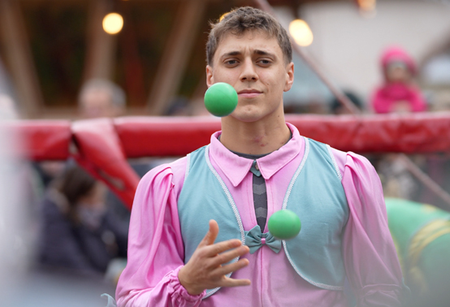
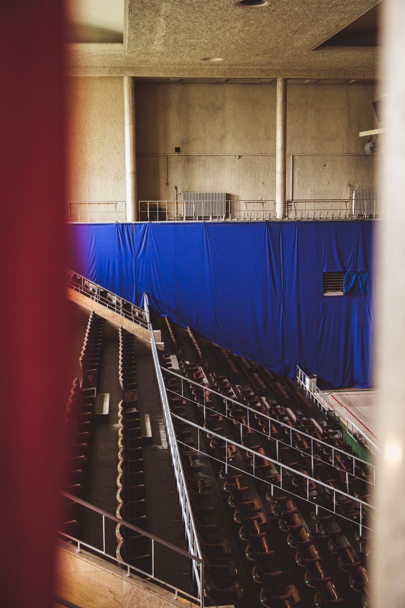

Momente festhalten. Wirkung verlängern.
Ein Event dauert oft nur wenige Stunden – ein guter Eventmovie wirkt deutlich länger.
Er verdichtet Atmosphäre, Emotionen und besondere Momente zu einem Film, der Erinnerungen wachhält und Reichweite schafft.
x@motion produziert professionelle Eventmovies, die nicht nur dokumentieren, sondern erlebbar machen.

Was ist ein Eventmovie von x@motion?
Ein Eventmovie ist mehr als ein Zusammenschnitt von Programmpunkten.
Er erzählt die Geschichte einer Veranstaltung – von der Stimmung über die Details bis hin zu den Menschen, die sie ausmachen.
Unsere Eventmovies sind emotional, dynamisch und zielgerichtet produziert – als Erinnerung, als Referenz und als Kommunikationsmittel.

Mehrwert für Ihre Produktionsidee
Identität
Ein Eventmovie zeigt Haltung, Charakter und Anspruch einer Veranstaltung oder Organisation.
Atmosphäre
Licht, Musik, Emotionen und Dynamik werden zu einem stimmigen Gesamtbild verdichtet.
Reichweite
Ein professioneller Film verlängert die Sichtbarkeit eines Events über den Veranstaltungstag hinaus.
Erinnerung
Ein Eventmovie hält besondere Momente fest und macht Veranstaltungen auch im Nachhinein erlebbar.
Dynamik
Schnelle Schnitte, starke Bilder und klare Dramaturgie sorgen für Spannung und Abwechslung.
Wertigkeit
Ein hochwertig produzierter Film unterstreicht die Bedeutung des Events und seine professionelle Umsetzung.
Eventmovies eignen sich besonders für:
Veranstalter
& Eventformate
Kommunen
& öffentliche Einrichtungen
Unternehmen
& Institutionen
Vereine
& OrganisationenWie läuft eine Eventmovie-Produktion ab?
Ein Eventmovie entsteht bei uns nicht zufällig, sondern nach einem festen Vorgehen.
Planung & Abstimmung
- Klärung von Ablauf, Schwerpunkten und Zielsetzung
- Abstimmung mit Veranstalter, Technik und Programm
- Definition von Bildsprache und Einsatzbereichen
Dreharbeiten & Begleitung
- Unauffällige und flexible Kamerabegleitung
- Einsatz abgestimmter Mehrkamera-Setups – passend zur Größe des Events
- Einsatz von Gimbal, Drohne oder zusätzlicher Technik bei Bedarf
Schnitt & Fertigstellung
- Auswahl und Strukturierung des Materials
- Schnitt, Farbkorrektur und abgestimmtes Sounddesign
- Übergabe in passenden Formaten für Web, Social Media oder Präsentation
Bei Eventproduktionen berücksichtigen wir relevante Rahmenbedingungen:
Abstimmung mit Veranstaltern und Locations
Berücksichtigung von Persönlichkeitsrechten
Rücksicht auf Publikum und Mitwirkende
Klare Vereinbarungen zur Nutzung des Materials

Eventmovies bei x@motion:
›Entweder als eigenständige Produktionen realisiert
- Aftermovie eines Stadtfests oder Firmenjubiläums
- Rückblick auf eine Gala, Preisverleihung oder Vereinsveranstaltung
- Eventfilm für ein einmaliges Konzert, Festival oder Sonderformat
»Oder produziert als Teil eines größeren Medienkonzepts
- Eventmovie als Basis für mehrere Social-Media-Clips und Reels
- Kombination aus Eventfilm, kurzen Teasern und Fotomaterial
- Eventmovie integriert in eine umfassende Kampagne oder Jahreskommunikation
Alles aus einer Hand – technisch und gestalterisch abgestimmt.
Warum Eventmovies von x@motion?
- Erfahrung mit unterschiedlichsten Formaten
- Ein Ansprechpartner – von Planung bis Übergabe
- Stimmige Dramaturgie statt beliebiger Schnittfolgen
- Klare Abstimmung statt Zufall
- Gefühl für Timing, Atmosphäre und Momente
- Professionelle Technik und saubere Umsetzung
Keine reine Dokumentation. Sondern ein Film, der wirkt!
Die wichtigsten Fragen
So früh wie möglich, sobald Termin und Ort feststehen. Dann können wir den Tag in Ruhe abstimmen und den Termin für Sie einplanen. Auch kurzfristige Anfragen sind einen Versuch wert, wir melden uns zeitnah zurück.
Das richtet sich nach Größe und Ablauf des Events. Ein kleinerer Termin kommt mit einem schlanken Setup aus, bei größeren Veranstaltungen planen wir Mehrkamera-Setups, Gimbal oder Drohne ein. Das stimmen wir vorab mit Ihnen ab.
Bei Veranstaltungen berücksichtigen wir Persönlichkeitsrechte und stimmen uns mit Veranstalter und Location ab. Üblich ist ein Hinweis auf Film- und Fotoaufnahmen bei der Veranstaltung. Die Details klären wir im Vorfeld mit Ihnen.
Das hängt vom Umfang des Projekts ab. Den Abgabetermin vereinbaren wir vorab, damit Sie ihn für Ihre Planung nutzen können.
Die Kosten hängen vom Aufwand ab – etwa von Dauer, Anzahl der Kameras, Technik und gewünschten Formaten. Nach einer kurzen Abstimmung erstellen wir ein transparentes Angebot.
Starke Bilder. Klare Geschichten.
Wann wird aus Ihrem Event ein Film?